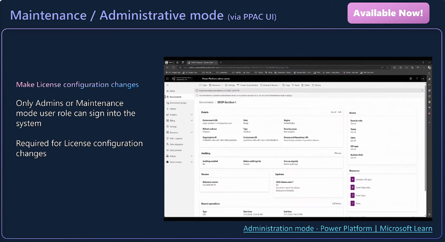

1. Open PPAC
2. Open the details your environment
3. Click Edit
4. Click Administration mode
And now as an Admin you can do the lincese configuration changes or any change like you used to do it in LCS
